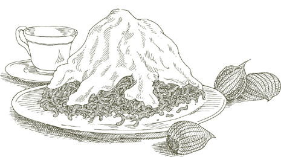
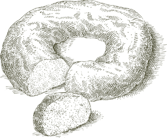

Croccante is the darkest, crunchiest, and least sweet of pralines, an irresistible candy that outshines most desserts and is astonishingly easy to make at home. Serve it alongside the after-dinner coffee, or to visitors at any time they may drop in, stash some in a bag when you are going on a trip, or crush it and grind it and use it as topping for ice cream or to mix with the frosting of other desserts. You can store it for weeks in a tightly closed jar or wrapped in aluminum foil, but once you start nibbling it doesn’t last very long.
4 to 6 servings as candy, about 2½ cups if crushed
6 ounces, about 1½ cups, shelled almonds with their skins on
1 heaping cup granulated sugar
A large sheet of heavy-duty aluminum foil, spread flat on a counter and smeared with 1 teaspoon vegetable oil
A peeled potato
1. Drop the almonds into a pot of boiling water. Drain after 2 minutes, enclose them in a rough cloth dampened with cold water, and rub briskly for a minute or two. Open up the cloth, remove those almonds that have been skinned along with all the loose peels, and if there are still some nuts with their skins on, repeat the operation until they have all been peeled clean. Discard all the peels and chop the almonds very fine, using a knife, not the food processor, into pieces about half the size of a grain of rice.
2. Put the sugar and ¼ cup water into a small, preferably light-weight, saucepan. Melt the sugar over medium-high heat without stirring it, but tilting the pan occasionally. When the melted sugar becomes colored a rich tawny gold, add the chopped almonds and stir constantly until the almond and caramelized sugar mixture becomes a golden brown. Pour it immediately over the oiled aluminum foil. Cut the potato in two and use the flat side to spread the hot praline out very thin, to a thickness of about ⅛ inch.
3. If you want to use it as candy: Cut it into 2-inch diamond shapes before it cools. When completely cold, lift the pieces off the foil and put them in a screw-top jar, or into packets of foil, wrapped tightly, and store in a dry, cool cupboard.
If you want to use it for toppings: When it is completely cold, break it up into pieces, and grind them fine in the food processor. Store in an airtight jar, but do not refrigerate.
In Bologna, rice cake used to be made only at Easter, an occasion for lively rivalry among those families that claimed to have the most delicious and authentic recipe. The one given here came to me from those well-known Bolognese bakers, the Simili sisters, who unhesitatingly assured me theirs was the most delicious and authentic version. I leave the question of authenticity to those more willing than I to discuss it, but it is a fact that I have never had a better-tasting example of rice cake.
For 6 to 8 servings
1 quart milk
¼ teaspoon salt
2 or 3 strips lemon peel, the skin only, with none of the white pith beneath it
1 ¼ cups granulated sugar
⅓ cup rice, preferably imported Italian Arborio rice
4 eggs plus 1 yolk
½ cup almonds, blanched, skinned, and chopped, as described
⅓ cup chopped candied citron
A 6-cup square or rectangular cake pan
Butter for smearing the pan
Fine, dry, unflavored bread crumbs
2 tablespoons rum
1. Put the milk, salt, lemon peel, and sugar in a saucepan and bring to a moderate boil.
2. As soon as the milk begins to boil, add the rice, stirring it quickly with a wooden spoon. Adjust heat to cook at the slowest of simmers, and cook for 2½ hours, stirring from time to time. When done, the mixture will have become a dense, pale-brown mush. Most of the fine lemon peel should have dissolved, but if you find any pieces of it, take them out. Set the rice mush aside to cool.
3. Preheat oven to 350°.
4. Beat the 4 eggs and the yolk in a large bowl until all the yolks and whites are evenly blended. Add the rice mush, beating it into the eggs a spoonful at a time. Add the chopped almonds and the candied citron, mixing them in uniformly.
5. Generously smear the bottom and sides of the cake pan with butter. Sprinkle the pan with bread crumbs, then turn the pan over and give a sharp rap against the counter to shake off loose crumbs. Pour the mixture from the bowl into the pan, leveling it off. Place the pan on the middle rack of the preheated oven, and bake for 1 hour.
6. As soon as you take the pan out of the oven, while the cake is still hot, pierce it in several places with a fork, and pour the rum over it. When the cake is lukewarm, turn the pan over onto a serving platter and shake or tap it against the counter to work the cake loose. Serve rice cake no sooner than 24 hours after making it; if you let it mature for 2 to 3 days longer, its flavor will become even deeper and richer. To serve it in the traditional Bolognese fashion, cut the cake, before bringing it to the table, in a diagonally cross-hatched pattern that will produce diamond-shaped pieces about 2½ inches long.
For 6 to 8 servings
Granulated sugar, ½ cup for the caramel plus ⅔ cup for the pudding
A 6-cup round, flameproof metal baking mold
2 cups milk
¼ teaspoon salt
⅓ cup semolina
1 tablespoon butter
1 tablespoon rum
¼ cup assorted candied fruit, chopped into ¼-inch pieces
The grated peel of 1 orange
Heaping ⅓ cup seedless raisins, preferably of the muscat variety, soaking in enough water to cover
All-purpose flour
2 eggs
1. Put ½ cup sugar and 2 tablespoons water in the mold, and bring to a boil on the stove over medium heat. Do not stir, but tilt the mold forward and backward to move the melted sugar until it becomes colored a light nut-brown. Take off heat immediately and quickly tip the mold in all directions, while the caramelized sugar is still liquid, to coat the mold evenly. Keep turning the mold until the caramel congeals, then set aside.
3. Put the milk and salt in a saucepan and turn on the heat to low. When the milk comes just to the edge of a boil, add the semolina, pouring it in a thin stream, and stirring rapidly with a whisk. Continue cooking, stirring constantly, until the semolina and milk mixture comes easily away from the sides of the pan. Take off heat, but continue to stir for another half minute or so until you are sure that the semolina mixture is not sticking to the pan.
4. Add the ⅔ cup sugar, stir, then add the butter and rum and stir thoroughly. Add the candied fruit and grated orange peel, stirring to distribute them evenly.
5. Drain the raisins and pat them dry in a cloth towel. Put them in a strainer and sprinkle them with flour while shaking the strainer. When the raisins have been evenly and lightly coated with flour, add them to the mixture in the pan.
6. Break the eggs into the semolina mixture, beating them in rapidly with a whisk. Pour the mixture into the caramelized mold and place it on the middle rack of the preheated oven. Bake for 40 minutes.
7. Take the pan out of the oven and allow the pudding to cool down. Then refrigerate it overnight. The following day, place the mold briefly on the stove over low heat, just long enough to soften the caramel. Take off heat, place a dish over the top of the mold, grasp the two tightly together with a dish towel, turn them over, and give the pan a few abrupt jerks against the dish until you feel the pudding loosen. Pull the pan away, unmolding the pudding onto the dish.
For 6 to 8 servings
Granulated sugar, 1 cup for the caramel plus ⅓ cup for the pudding
An 8-cup rectangular flameproof, metal cake pan or loaf pan
2½ cups good-quality stale white bread, trimmed of its crust, lightly toasted, and cut up
4 tablespoons (½ stick) butter
2 cups milk
½ cup seedless raisins, preferably of the muscat variety, soaking in enough water to cover
All-purpose flour
¼ cup pignoli (pine nuts)
3 egg yolks
2 egg whites
¼ cup rum
1. Put 1 cup sugar and 3 tablespoons water in the pan, and caramelize it, following the directions in Step 1 of the preceding recipe for Semolina Pudding.
2. Preheat oven to 375°.
3. Put the cut-up bread and the butter in a mixing bowl.
4. Put the milk in a small saucepan, turn the heat on to medium, and as soon as the milk forms a ring of tiny bubbles, pour it over the bread and butter. Do not stir, let the bread steep in the milk, and allow it to cool. When cool, beat it with a whisk or a fork until it becomes a soft, uniform mass.
5. Drain the raisins and pat them dry in a cloth towel. Put them in a strainer and sprinkle them with flour while shaking the strainer. When the raisins have been evenly and lightly coated with flour, mix them with the beaten bread mass.
6. Add ⅓ cup sugar, the pine nuts, and the egg yolks to the bowl, and mix thoroughly with the other ingredients.
7. In a separate bowl beat the egg whites until they form stiff peaks, then fold them gently into the bread mixture.
8. Transfer the bread mixture to the caramelized pan, level it off, and place the pan on the middle rack of the preheated oven. After 1 hour, turn the thermostat down to 300° and bake for 15 more minutes.
9. As soon as you take the pan out of the oven, while the pudding is still hot, pierce it in several places with a fork, and pour 2 tablespoons of rum over it. When the rum has been absorbed, turn the pan over onto a serving platter and shake or tap it against the counter to work the pudding loose. Lift the pan, unmolding the pudding onto the platter, pierce the pudding in several places, and pour the remaining 2 tablespoons of rum over it. Allow the pudding to mature for at least a day before serving it. You can refrigerate it for several days, but allow it to come to room temperature before bringing to the table.
Sbricciolona—literal meaning of which is “she that crumbles”—is a dry, biscuity cake that is delicious after dinner with a glass of vin santo or Port, and it is equally welcome between meals, as a mid-morning nibble for example, or with an afternoon cup of tea or coffee.
It really does crumble and part of its charm is the irregularity of the pieces it breaks into. If you prefer to serve it in neat wedge-shaped sections, however, cut it while it is warm, before it hardens. Sbricciolona keeps beautifully for days and days, wrapped in foil or kept in a tin biscuit box.
My first acquaintance with sbricciolona took place in Ferrara, whose university I was attending. But when you travel in northern Italy you will find sbricciolona elsewhere, particularly in Mantua, and also in Piedmont’s Langhe wine country, where they make it with hazelnuts instead of almonds.
For 6 servings
¼ pound almonds, blanched and skinned as described
1½ cups all-purpose flour
⅔ cup cornmeal
⅝ cup granulated sugar
The peel of 1 lemon grated without digging into the white pith beneath
2 egg yolks
8 tablespoons (1 stick) butter, softened to room temperature, plus more for smearing the cake pan
A 12-inch round cake pan
1. Preheat oven to 375°.
2. Grind the skinned almonds to powder in the food processor, turning the motor on and off.
3. Put the flour, cornmeal, granulated sugar, grated lemon peel, and powdered almonds in a bowl, and mix well. Add the 2 egg yolks, and work the mixture with your hands until it breaks up into little pellets. Add the softened butter, kneading it in with your fingers until it is completely incorporated into the mixture. (At first it may seem improbable that all the ingredients can ever be combined, but after working them for a few minutes, you will find they do hang together, forming a dry, crumbly dough.)
4. Smear the bottom of the cake pan with butter. Crumble the dough through your fingers into the pan until it is all uniformly distributed. Place the pan in the upper third of the preheated oven, and bake for 40 minutes. Serve when completely cold and hard (see prefatory note above).
KNOWN BY a variety of names—chiacchiere della nonna, “grandmother’s small talk,” and frappe are the most common—these fritters are ribbons of dough twisted into bows and fried. The flavor and the fine, crisp texture of traditional versions depend on the use of lard, both in the dough and for frying.
If you have insurmountable objections to lard, butter and vegetable oil can be substituted, as indicated below.
For 4 to 6 servings
1⅔ cups all-purpose flour
¼ cup lard OR butter
1 tablespoon granulated sugar
1 egg
2 tablespoons dry white wine
¼ teaspoon salt
Lard or vegetable oil for frying
Confectioners’ sugar
1. Combine the flour with ¼ cup of either lard or butter and the granulated sugar, egg, white wine, and salt, kneading them into a smooth, soft dough. Put the dough in a bowl, cover with plastic wrap, and let it rest for at least 15 minutes.
2. On a lightly floured surface, roll out the dough to a thickness of ⅛ inch, then cut it into ribbons about 5 inches long and ½ inch wide. Twist and loop the ribbons into simple bows.
3. Melt enough lard in a skillet—or pour in enough vegetable oil—to come 1 inch up the sides of the pan. Have the heat turned to high. When the fat is very hot, put in as many pastry bows as will fit loosely in the pan. Fry them to a deep gold color on one side, then turn them and do the other side. Transfer them to a cooling rack to drain. (If you are using lard, make sure it does not overheat. If you detect the beginning of a burning smell, turn the heat down.) Repeat the procedure until all the remaining bows are done. Sprinkle with confectioners’ sugar, and serve either piping hot or at room temperature. The fritters usually disappear so quickly that how best to keep them may remain purely theoretical, but in case some are left over, stack them on a plate and store them in a cupboard. They keep very well for several days.
For 4 to 6 servings
3 apples of any firm, but not sour, cooking variety
¼ cup granulated sugar
2 tablespoons rum
The peel of 1 lemon grated without digging into the white pith beneath
⅔ cup all-purpose flour
Vegetable oil
Confectioners’ sugar
1. Peel and core the apples, and cut them into slices about ⅜ inch thick.
2. Put the granulated sugar, rum, and grated lemon peel into a bowl together with the apple slices. Turn the slices once or twice and let steep for at least 1 hour.
3. Use the flour and about 1 cup water to make a pastella batter as described.
4. Pour enough oil into a skillet to come ½ inch up the sides, and turn on the heat to high.
5. Take the apple slices out of the bowl and pat them dry with paper towels. When the oil is very hot, dip them in the batter and slip as many of them into the skillet as will fit loosely. Fry them to a golden brown on one side, then turn them and do the other side. Transfer them to a cooling rack to drain. Repeat the procedure until all the remaining slices are done. Sprinkle with confectioners’ sugar and serve while hot.
Is THERE any other dessert like diplomatico, I wonder, that rewards such little effort with such gratifying results? You never even have to turn on the oven because you utilize ready-made pound cake. Slices of rum- and coffee-soaked cake are alternated with a simple mousse-like mixture of melted chocolate and eggs, and basically that is all there is to it. You can’t go wrong: Put in a little less rum, add a little more chocolate, add or subtract an egg, and it will still be a great success.
For 6 to 8 servings
FOR THE RUM AND COFFEE SOAK
5 tablespoons rum
1¼ cups strong espresso coffee
5 teaspoons granulated sugar
5 tablespoons water
Note  Some pound cakes absorb more than others, and the rum and coffee mixture may not suffice for soaking all the slices; have additional coffee and rum available and prepare more, if you need to, guided by the proportions given above.
Some pound cakes absorb more than others, and the rum and coffee mixture may not suffice for soaking all the slices; have additional coffee and rum available and prepare more, if you need to, guided by the proportions given above.
A 16-ounce pound cake
Cheesecloth
A 9-inch rectangular cake pan (if you like your dessert to be tall rather than broad, use a narrow loaf pan)
4 eggs
1 teaspoon granulated sugar
A double boiler
6 ounces semisweet chocolate in drops or chopped up or grated squares
THE FROSTING
(If you prefer chocolate)
4 ounces semisweet chocolate in drops or chopped up or grated squares
1 teaspoon butter
1 tablespoon heavy whipping cream
(If you prefer whipped cream)
1 cup very cold heavy whipping cream
1 teaspoon granulated sugar
A copper or other mixing bowl kept in the freezer
THE GARNISH
Fresh berries OR walnuts and candied fruit for either the chocolate or whipped cream frosting
1. For the rum and coffee soak: In a small bowl combine the rum, espresso, sugar, and water. Cut the pound cake into slices ¼ inch thick. Moisten cheesecloth with water and use it to line the inside of the cake pan with enough left over to extend beyond the pan and cover the cake later. Soak the pound cake, slice by slice in the rum and coffee mixture, then use the slices to line the bottom and sides of the pan. Leave no gaps, patching where necessary with pieces of soaked pound cake. Dip the cake slices in and out of the mixture rather quickly, otherwise they become too soggy to handle. If you run out of rum and coffee, mix some more.
2. For the chocolate filling: Separate the eggs, and beat the yolks with 1 teaspoon sugar until they turn pale yellow.
3. Put water in the bottom of a double boiler, bring it to a gentle, but steady simmer, then put the chocolate drops or chopped or grated semisweet chocolate into the top of the double boiler. When the chocolate has melted, pour it, a little at a time, over the egg yolks, mixing rapidly, until all the chocolate has been thoroughly amalgamated into the egg yolks.
4. Beat the egg whites in a bowl until they form stiff peaks. Mix 1 tablespoon of egg white into the chocolate and egg yolk mixture, then add the remainder, folding them in gently so as not to collapse them.
5. Spoon the chocolate filling into the pan, over the rum- and coffee-soaked cake slices. Top and cover with more slices of cake soaked in rum and coffee, and over them fold the moistened cheesecloth extending over the rim of the pan. Refrigerate until the following day at least.
6. When you take the cake out of the refrigerator, unfold the cheesecloth, pulling it away from the top. Turn the pan over on a platter, and shake it abruptly to loosen the cake, letting it drop onto the platter. Pull off the cheesecloth covering it.
7. If frosting with chocolate: Bring water to a simmer in the bottom of a double boiler. In the top put the 4 ounces of chocolate drops or chopped or grated semisweet chocolate together with 1 teaspoon butter. When the chocolate has melted, stir in the 1 tablespoon of heavy cream. Spread the frosting evenly over the top and sides of the diplomatico. Refrigerate for an hour or so until the chocolate hardens.
If frosting with whipped cream: Put 1 cup very cold heavy cream and 1 teaspoon sugar into the bowl you had been keeping in the freezer. Whip it with a whisk until it is stiff. Use it to cover the top and sides of the cake.
Garnish the cake with a simple arrangement of either walnuts and candied fruit or fresh raspberries and blueberries or other berries.
Ahead-of-time note You can leave the diplomatico in the refrigerator for up to a week before proceeding with the next step.

THAT THIS dome-shaped dessert is a Florentine specialty appears certain; what there is no general agreement upon is whether the name is an affectionate reference to the cupola that dominates Florence’s skyline, or a less than reverent allusion to the clergy, inasmuch as in the Tuscan dialect, a cardinal’s skullcap is also called a zuccotto. However it may have come by its name, zuccotto is another of those delightful confections that is so easy to take, and happily, just as easy to make. It may look like a pastry chef’s triumph, but the greatest demand its preparation makes on you is that of assembling a far from daunting list of mostly ready-made components.
For 6 servings
2 ounces shelled almonds, blanched and skinned as described
2 ounces shelled whole hazelnuts
A 1½-quart bowl, its bottom as perfectly round as possible
Cheesecloth
A 10- to 12-ounce pound cake
3 tablespoons Cognac
2 tablespoons Maraschino liqueur (see note below)
2 tablespoons Cointreau or white Curaçao liqueur
5 ounces semisweet chocolate in drops or squares
A mixing bowl kept in the freezer
2 cups very cold heavy whipping cream
¾ cup confectioners’ sugar
A double boiler
Note Maraschino is a fine Italian liqueur made from the pulp and crushed pits of the Dalmatian marasca cherry, with a distinctive flavor that no other fruit cordial duplicates. One of its most appealing uses is with marinated fresh fruit. Do not confuse the liqueur with the cherries that go by the same name; the latter are quite ordinary preserved and artificially colored cherries. There’s no perfect substitute for Maraschino, but if you must use something else, look for a not too sweet cherry liqueur.
1. Preheat oven to 375°.
2. When the oven reaches the preset temperature, put the peeled almonds on a baking sheet, and place it on the uppermost rack of the preheated oven for 5 minutes. Watch the nuts to make sure they don’t burn. (Do not turn the oven off when you take the almonds out.) Chop the almonds rather coarse by hand, or in the food processor, turning the blade on and off.
3. Put the shelled hazelnuts on the baking sheet, and roast them in the hot oven for 5 minutes. Take them out and use a dry, rough towel to rub off as much of their skin as comes easily away. Chop rather coarse, as you did the almonds.
4. Line the inside of the round bowl with a layer of moistened cheesecloth.
5. Cut most of the pound cake into slices ⅜ inch thick. Divide each slice diagonally in half, making two triangular pieces, each with crust on two sides.
6. Combine the Cognac, Maraschino, and Cointreau in a small bowl or deep saucer. Use a spoon to sprinkle some of the liqueur mixture over each piece of cake, reserving some of the mixture for later. Line the inside of the bowl with moistened pound cake, the narrow end of each piece facing the bottom of the bowl. As you lay the pound cake triangles side by side, have a side with crust next to one without. When you unmold the zuccotto, the thin crust lines will form a sunburst pattern. Make sure the entire inner surface of the bowl is lined with cake. If you need to slice more of the cake, do so. If there are gaps, fill them with small pieces of moistened cake without worrying about the pattern they form. A certain measure of irregularity has its appeal as indication of the handmade character of the dessert.
7. If using chocolate drops split them, if using squares, chop them rather coarse.
8. Take the mixing bowl out of the freezer, put in the heavy cream and the confectioners’ sugar, and whip with a whisk until the cream is stiff. Add to it 3 ounces of the chocolate, and all the chopped almonds and hazelnuts, distributing them evenly. Spoon one-half of the whipped cream mixture into the cake-lined bowl, spreading it uniformly with the back of the spoon or with a spatula over all the cake lining. You should be left with a hollow in the center.
9. Melt the remaining 2 ounces of chocolate in the top of a double boiler as described. Fold the melted chocolate into the remaining half of the whipped cream mixture, and spoon it over the cake, filling the hollow. Trim away any pieces of cake that protrude past the top edge of the bowl. Work out how many more slices of cake you will need to cover the top of the bowl, moisten them with the remaining liqueurs, and place them over the cream. Their outside edge must meet the top edge of the cake lining the sides of the bowl, thus sealing the zuccotto. Cover with plastic wrap and refrigerate overnight or up to 2 days.
10. Upon taking the bowl out of the refrigerator, remove the plastic wrap and turn the bowl upside down onto a platter. Lift the bowl away, leaving the zuccotto on the platter, and carefully pull off the cheesecloth. Serve while still cold.
From the ingredients and materials in the basic recipe above, omit the double boiler, the whipping cream, the confectioners’ sugar, and the bowl in the freezer. Have on hand 1 cup premium-quality dark chocolate ice cream (see Marcella’s Italian Kitchen, page 320), and 1 cup homemade egg custard ice cream or premium-quality vanilla ice cream.
• Follow the directions in the basic recipe through Step 7, until you have split the chocolate drops or chopped the squares. Mix the chocolate drops or chopped squares together with the almonds and hazelnuts. Divide the mixture into 2 equal parts.
• Put the chocolate and the vanilla ice creams in separate small bowls or saucers, and soften them to spreading consistency with a fork, but do not allow them to melt.
• Add the chocolate ice cream to one half of the chopped nut mixture, and the vanilla or egg custard ice cream to the other half.
• Spread the vanilla or egg custard ice cream mixture over the cake lining the bowl, leaving a hollow in the center. Fill the hollow with the chocolate ice cream.
• Seal the zuccotto with cake slices as described in the basic recipe, cover with freezer paper, and place in the freezer for at least 3 hours. Transfer to the refrigerator for 30 minutes before serving. Unmold as described in the basic recipe, and serve at once.
Fresh chestnuts become available at the beginning of fall and continue to come to the market through the winter. Preserved chestnut meat is sold throughout the year in cans and jars, but it is no substitute for good quality fresh nuts.
How to choose In Italy one distinguishes between two types of edible chestnuts; one is small and flat, each prickly bur that contains them bears two, and it is known as castagna comune, or common chestnut; the other is larger and much plumper, each bur contains just one, and it is known as marrone. The latter is the kind to look for, because its flesh is much juicier and sweeter. When truly fresh, chestnut skins should be glossy, unwrinkled, and the nut should feel heavy in the hand.
How to prepare The whole secret of cooking fresh chestnuts successfully rests in learning how to cut their shell, so that when they are cooked both the shell and the tough thin skin beneath will easily come away.

• After washing the nuts in cold water, soak them in lukewarm water for about 20 minutes; this step softens their shell and makes it easier to slash.
• When the nuts have finished soaking, make a horizontal cut that partly rings the middle of each one, starting at one edge of the flat side, circling the bulging belly side of the chestnut, and stopping just past the other edge of the flat side. Do not cut into the flat side itself, and keep the slash shallow so that you do not dig into the chestnut meat.

ON THOSE DAYS when Milan’s veil of gray air miraculously dissolves, and through gaps in the city skyline one can see the mountains lined up on the horizon, the eye is irresistibly drawn up to the perpetually white summit of Mont Blanc, gleaming like a frosty mirage in the northern sky. Monte Bianco, to call the mount by its Italian name, has a namesake that, in the fall, makes its appearance on demand on Milanese tables: It is a pyramid of dark chocolate and pureed fresh chestnuts, topped by a snowy peak of whipped cream. We can be deeply—even if only momentarily—consoled for the end of summer and the approach of winter by the heartwarming aroma and flavor of fresh chestnuts, and in monte bianco they find their most succulent employment.
For 6 servings
1 pound fresh chestnuts, soaked and gashed as described
Milk
Salt
6 ounces semisweet chocolate in drops or chopped squares
A double boiler
¼ cup rum
A mixing bowl kept in the freezer
2 cups very cold heavy whipping cream
2 teaspoons granulated sugar
1. Put the gashed chestnuts in a pot, cover amply with water, put a lid on the pot, bring the water to a boil, and cook for 25 minutes after the boil begins. Scoop the chestnuts out of the water a few at a time, peeling them while still very warm. Make sure you remove not only the outer shell, but also the wrinkled inner skin, but do not worry about keeping the chestnuts whole because you’ll be pureeing them later.
2. Put the peeled nuts in a saucepan with just enough milk to cover and a pinch of salt. Cook at a steady simmer without covering the pan until all the milk has been absorbed, about 15 minutes.
3. Melt the chocolate in a double boiler as described.
4. Puree the chestnuts into a bowl, passing them through a food mill fitted with the disk with large holes. Add the melted chocolate and rum, mixing the ingredients well. Cover the bowl tightly with plastic wrap and refrigerate for at least 1 hour.
5. Pass the chestnut puree and chocolate mixture through the food mill, fitted with the same disk, letting it drop onto a round serving platter. At first hold the food mill close to the edge of the dish; as you pass the mixture through it and as it piles up, bring the food mill gradually toward the center of the dish in an upward spiral direction. What you want to do is distribute the chestnut and chocolate on the platter so that it forms a cone-shaped mound. Do not pat it, or shape it in any way, but leave it looking exactly the way it did when it dropped from the mill.
6. Put the cream and sugar in the bowl you had been keeping in the freezer and whip it with a whisk until it stiffens. Use half the whipped cream to cover the top of the chestnut mound, coming about two-thirds of the way down. It should have a natural, “snowed-on” look, so let the cream come down the mound at random in peaks and hollows.
7. Serve the dessert with the remaining whipped cream on the side for those who would like their monte bianco with a little more “snow.”
Ahead-of-time note The chestnut and chocolate mixture can be prepared up to this point a day in advance and refrigerated until you are ready to proceed.
Ahead-of-time note The monte bianco can be completed as described above, and served up to 4 to 6 hours later. Refrigerate it, but do not cover it. Also refrigerate the remaining half of the whipped cream.
How PROVIDENTIAL of chestnuts to be on hand when days are short, and evenings long and cold. As a university student living in an unheated room, I remember almost looking forward to winter, to those days that would end sitting by a fireplace with friends, a pot of boiled chestnuts, and a flask of rough, young wine. My father would say that chestnuts and wine make one tipsy. It hasn’t been demonstrated that the nuts make wine more inebriating, but it is true that a taste of one leads irresistibly to a sip of the other, and vice versa, and it may take a long time to decide, while you continue to try both, whether you want to bring the evening to a close with a bite of chestnut or a swallow of wine.
For 4 servings
1 pound fresh chestnuts, soaked and gashed as described
1 cup dry red wine, preferably Chianti
Salt
2 whole bay leaves
1. Put the gashed chestnuts in a pot with the wine, a tiny pinch of salt, the bay leaves, and just enough water to cover. Put a lid on the pot, and turn on the heat to medium.
2. When the chestnuts are tender—it depends greatly on the freshness of the nuts, it may take 30 minutes or 1 hour—uncover the pot, and allow all but 1 or 2 tablespoons of wine to simmer away. Bring the chestnuts to the table at once, preferably in the pot, or in a warm bowl. Everyone will peel his or her own, which is part of the fun.
THERE MAY BE no food scent more enticing than that of chestnuts roasting over hot coals. Unfortunately, the roasted chestnuts most of us are acquainted with are of the street corner variety, hard, dry, half-cooked, and often as not, cold. Yet it is easy to roast chestnuts at home in the oven that will taste just as good as they smell.
For 4 servings
1 pound fresh chestnuts, soaked and gashed as described
1. Preheat oven to 475°.
2. Spread the gashed chestnuts on a baking sheet, and when the oven reaches the preset temperature, put it in on the middle rack. Turn the nuts over from time to time, but not so often to lose heat in the oven.
3. When the chestnuts are tender—it will take between 30 and 45 minutes, depending on their freshness—take them off the baking sheet and wrap them tightly in a cloth towel. They will steam a bit inside the towel, causing the skins to come loose much more easily. After 10 minutes, unwrap and serve.
IF YOU HAVE the perforated skillet made for the purpose, or a similar pan, you can roast chestnuts over a gas flame or a charcoal fire. Don’t put in any more at one time than will fit without stacking. If you are doing it over the stove, use medium heat; if it is over charcoal, there should be enough very hot, but not flaming, coals to provide constant heat for about 40 minutes. If the heat is too hot, the nuts will be charred on the outside, and undercooked on the inside. If there is not enough heat, they won’t be cooked at all. Move the chestnuts around frequently to prevent their being burned on one side.
They are done when tender all the way through, when their centers are no longer floury and dry. It will take from 30 minutes to 45 minutes, depending on the freshness and size of the nuts. When done, wrap them in a cloth towel for 10 minutes to help the skins come away easily.

THE ALMOND is by a wide margin the most favored nut in Italian cakes, particularly in the Veneto, and a comprehensive anthology of Italy’s almond desserts would require a substantial volume. There are no egg yolks and there is no butter in this recipe, which uses only the whites instead of whole eggs, and produces a firm, but fairly light cake.
For 6 to 8 servings
10 ounces shelled, but unpeeled almonds, about 2 cups
1⅓ cups granulated sugar
8 egg whites
Salt
The peel of 1 lemon grated without digging into the white pith beneath
6 tablespoons flour
An 8- or 9-inch springform pan
Butter for greasing the pan
1. Preheat oven to 350°.
2. Put the almonds and sugar in a blender or food processor and grind to a fine consistency, turning the motor on and off.
3. Beat the egg whites together with ½ teaspoon salt until they form stiff peaks.
4. Add the ground almonds and the grated lemon peel to the egg whites, a little bit at a time, folding them in gently, but thoroughly. The whites may deflate a bit, but if you mix carefully there should be no significant loss of volume.
5. Add the flour, shaking a little of it at a time through a strainer, and again, mixing gently.
6. Thickly smear the pan with butter. Put the cake batter into the pan, shaking the pan to level it off. Place the pan in the middle level of the preheated oven and bake for 1 hour. Before taking it out of the oven, test the center of the cake by piercing it with a toothpick. If it comes out dry, the cake is done. If it does not, cook a little longer.
7. When done, unlock the pan and remove the hoop. When the cake has cooled somewhat, and it is just lukewarm, loosen it from the bottom of the pan. Serve when it is completely cold. It will keep quite a while if stored in a tin biscuit box.
For 8 servings
½ pound shelled walnuts
⅔ cup granulated sugar
8 tablespoons (1 stick) butter, softened at room temperature
1 egg
2 tablespoons rum
The peel of 1 lemon grated without digging into the white pith beneath
1½ teaspoons baking powder
1 cup flour
An 8- or 9-inch springform pan
1. Preheat oven to 325°. When it has reached the preset temperature, spread the walnuts on a baking sheet and place in the middle of the oven. After 5 minutes, take the walnuts out of the oven and turn the thermostat up to 350°.
2. When the walnuts are cold, put them in a food processor together with 1 tablespoon of sugar, and grind fine, but not to a powder, turning the motor on and off. Take them out of the processor bowl and set aside.
3. Set aside 1 tablespoon butter for smearing the pan later. Put the remaining 7 tablespoons into the processor together with the rest of the sugar and process to a creamy consistency. Add the egg, rum, lemon peel, and baking powder, and process briefly until all ingredients are uniformly combined. Transfer the contents of the food processor to a mixing bowl.
4. Add the ground walnuts to the bowl, working them uniformly into the mixture with a spoon or spatula. Add the flour, shaking it through a strainer and combining it with the other ingredients to form a fairly compact and evenly blended cake batter.
5. Smear the cake pan with the 1 tablespoon butter, sprinkle lightly with flour, then turn the pan over, tapping it against the counter to shake off excess flour. Put in the batter, leveling it off with a spatula. Place the pan in the upper level of the oven. After 45 minutes, before taking it out of the oven, test the center of the cake by piercing it with a toothpick. If it comes out dry, the cake is done. If it does not, cook 10 minutes or so longer.
6. When done, unlock the pan and remove the hoop. When the cake has cooled somewhat, and it is just lukewarm, loosen it from the bottom of the pan. Serve after 24 hours, when its flavor has fully developed. It will keep quite a while if stored in a tin biscuit box.
Note The concentrated flavor of this walnut cake makes a modest slice amply satisfying. It goes perfectly with tea or coffee in the morning or afternoon. If served after dinner, it should be topped with freshly whipped cream.
THIS TENDER, FRUITY CAKE has been described as being so simple that only an active campaign of sabotage could ruin it. It is indeed simple, but the choice of pears will considerably affect its flavor. It is not half so appealing when made with Bartlett pears as it is when made with a winter variety such as the Bosc or the Anjou. In Italy one would choose a long, slim brownish yellow pear known as Conferenza.
For 6 servings
2 eggs
¼ cup milk
1 cup granulated sugar
Salt
1½ cups all-purpose flour
2 pounds fresh pears
A 9-inch round cake pan
Butter for greasing the pan and dotting the cake
½ cup dry, unflavored bread crumbs
OPTIONAL: 1 dozen cloves
1. Preheat oven to 375°.
2. Beat the eggs and milk together in a bowl. Add the sugar and a tiny pinch salt, and continue to beat. Add the flour, mixing it in thoroughly to produce a compact cake batter.
3. Peel the pears, cut them lengthwise in two, scoop out the seeds and core, then cut them into thin slices about 1 inch wide. Add them to the batter in the bowl, distributing them evenly.
4. Smear the pan generously with butter, sprinkle lightly with bread crumbs, then turn the pan over and give it a sharp rap against the counter to shake loose excess crumbs.
5. Put the batter into the pan, leveling it off with the back of a spoon or a spatula. Make numerous small hollows on top with a fingertip and fill them with little bits of butter. Stud with the optional cloves, distributing them at random, but apart. Place the pan in the upper third of the preheated oven and bake for 50 minutes, or until the top has become lightly colored.
6. While it is still lukewarm, carefully loosen the tart from the bottom of the pan, lift it with spatulas, and transfer to a platter. It is very nice served while still a little warm, or at room temperature.

WHEN JAMES BEARD sojourned in Venice many years ago, he was fascinated by this local specialty, whose nuts and dried fruits are redolent of imperial Venice’s trading days with the Near East, and he asked me to provide the recipe.
Jim was surprised to find it contained only one egg, but it does rise to about 2 inches, which is not inconsiderable for this rich and dense dessert. It can be quite good served with a dollop or two of fresh whipped cream, but, then, what isn’t?
For 6 to 8 servings
1 cup coarse cornmeal
Salt
1½ tablespoons extra virgin olive oil
Heaping ½ cup granulated sugar
⅓ cup pignoli (pine nuts)
⅓ cup seedless raisins, preferably of the muscat variety
1 cup dried figs, cut into ¼-inch pieces
2 tablespoons butter plus more for smearing the pan
1 egg
2 tablespoons fennel seeds
1 cup all-purpose flour
A 9-inch round cake pan
Fine, dry, unflavored bread crumbs
1. Preheat oven to 400°.
2. Bring 2 cups water to a boil in a medium-size saucepan, then adjust heat to medium and add the cornmeal, pouring it in a thin stream. Let it run through the fingers of your partly clenched fist. With your other hand, stir constantly with a wooden spoon. When all the cornmeal is in, add the salt and the olive oil. Continue to stir for about 15 seconds until the mush thickens and pulls away from the sides of the pan when you stir it. Take off heat.
3. To the cornmeal mush add the sugar, pine nuts, raisins, figs, butter, egg, and fennel seeds, and mix thoroughly to combine all ingredients uniformly. Add the flour, and mix well to form a smoothly amalgamated cake batter.
4. Smear the cake pan with butter, sprinkle lightly with bread crumbs, then turn the pan over tapping it against the counter to shake off excess bread crumbs. Put in the batter, leveling it off with a spatula. Place the pan in the upper level of the oven and bake for 45 to 50 minutes.
5. While the cake is still warm, loosen its sides from the pan with a knife, and invert the pan over a plate, shaking it a little to cause the cake to drop onto the plate. Then turn the cake over again onto a serving platter. Serve when it has become completely cold.
IN THE COUNTRY north of Verona, the grape and olive growers share the hills with the stone cutters, the latter taking the elevations too high for the vines and olive trees to thrive. Many of the farmers and stonemasons also share a table at the Trattoria Dalla Rosa, in the ancient town of San Giorgio, perched under the brow of one of the tallest hills. Alda Dalla Rosa, the matriarch, is in command of the kitchen, but her daughter Nori is the baker. This surprising and savory cake that uses only the local olive oil—possibly Italy’s finest—for shortening comes from an undatable recipe Nori salvaged from the family’s few preserved written records.
For 6 servings
2 eggs
½ cup plus 2 tablespoons granulated sugar
The peel of 1 lemon grated without digging into the white pith beneath
Salt
⅓ cup dry Marsala wine
⅓ cup milk
¾ cup extra virgin olive oil for the batter plus more for the pan
1 tablespoon baking powder
1½ cups all-purpose flour
A 2¼-quart tube pan
1. Preheat oven to 400°.
2. Break the eggs into a bowl and beat them with all the sugar until they become pale and foamy.
3. Add the grated lemon peel, salt, Marsala, milk, and the ¾ cup olive oil.
4. Mix the baking powder with the flour, add to the other ingredients, and mix thoroughly.
5. Smear the inside of the pan with a thin coating of olive oil, pour the batter into the pan, and bake in the upper third of the preheated oven for 50 minutes.
6. Let the cake cool for about 10 minutes, loosen it from the tube and sides of the pan with a knife blade, turn it over, unmolding it, and place it on a cooling rack until it comes to room temperature.

MOST ITALIAN DESSERTS are purchased from the local pastry shop, but some are habitually baked at home, and each region has one or two that are its specialty. Ciambella is my native Romagna’s traditional home-baked cake, and as with other home-nurtured traditions, every household has its own version. Some use anise along with, or in place of, the lemon peel; others add white wine to the batter. Each is as “authentic” as the next. The one below is the recipe my grandmother used and like all tastes one grows up with, it is the one I like best.
At home, there seems to be no time of the day that is not appropriate for having a slice of ciambella. My mother, at ninety-seven, still has it every morning with her caffelatte, a big cup of weak espresso diluted with hot milk. The old farmers’ way is to dunk the cake at the end of the meal into a glass of sweet wine. In this, as in many other instances where Italian food and drink is concerned, the farmers’ way amply rewards emulation.
For 8 to 10 servings
8 tablespoons (1 stick) butter
4 cups unbleached flour
¾ cup granulated sugar
2½ teaspoons cream of tartar, available in pharmacies as potassium bitartrate, and 1 teaspoon bicarbonate of soda OR 3½ teaspoons baking powder
Salt
The peel of 1 lemon grated without digging into the white pith beneath
¼ cup lukewarm milk
2 eggs
A heavy baking sheet
Butter and flour for smearing and dusting the baking sheet
2. Put the butter in a saucepan and melt it without getting it too hot.
3. Put the flour in a large mixing bowl. Add the sugar, melted butter, cream of tartar, bicarbonate, a tiny pinch of salt, grated lemon peel, and the lukewarm milk. Add 1 whole egg and the white of the second egg. Add the yolk of the second egg less 1 teaspoonful of it, which you will set aside for “painting” the ring later. Thoroughly mix all the ingredients, then turn them out onto a work surface and knead the mixture for a few minutes.
4. Shape the dough into a large sausage roll about 2 inches thick, and make it into a ring. Pinch the ends together to close the ring. Brush the surface with the teaspoonful of yolk you have set aside and 1 teaspoon water, and score with a few shallow diagonal cuts.
5. Smear the baking sheet with butter, sprinkle it with flour, then turn it over and give it a rap on the counter to shake off excess flour. Put the ring in its center and place the sheet in the upper level of the preheated oven. Bake for 35 minutes. It should rise to nearly double its original size. Transfer to a cooling rack. When cold, wrap in foil or store in a tin biscuit box, but do not refrigerate. It tastes best served the following day.
55 to 60 cookies
11 ounces almonds, blanched and skinned, as described
1 cup plus 3 tablespoons granulated sugar
4 egg whites
Salt
½ teaspoon pure vanilla extract
Butter for smearing the cookie sheet
1. At least 30 minutes before you are ready to bake, preheat oven to 300°.
2. If using a food processor, pulverize the peeled almonds together with the sugar, turning the processor on and off.
If using a knife, chop the almonds very fine by themselves, preferably while they are still warm, then combine them with the sugar.
3. Whip the egg whites in a bowl together with a pinch of salt until they form stiff peaks.
4. Fold the egg whites into the almond and sugar mixture together with the vanilla extract.
5. Smear a baking sheet or shallow pan with butter. Scoop up some of the cookie batter with a tablespoon, and use another spoon to push it off onto the baking sheet or pan. Keep the mounds of batter about 1½ inches apart. Don’t worry if they seem shapeless: Their Italian name means ugly, but good; they are expected to be very irregular.
6. Bake on the middle rack of the preheated oven for 30 minutes. Spread them out on a cooling rack. These cookies keep for a very long time if stored in a tin biscuit box.
About 4 dozen cookies
4 ounces almonds, blanched and skinned, as described
½ cup granulated sugar
2 egg yolks
2 heaping cups unbleached flour
Salt
The peel of 1 lemon grated without digging into the white pith beneath
¼ cup freshly squeezed lemon juice
Butter for smearing the cookie sheet or pan
1 egg, lightly beaten with 1 tablespoon water
A pastry brush
1. At least 30 minutes before you are ready to bake, preheat oven to 400°.
2. If using a food processor, pulverize the peeled almonds together with the sugar, turning the processor on and off.
If using a knife, chop the almonds very fine by themselves, preferably while they are still warm, then combine with the sugar.
3. If using the food processor, add the 2 egg yolks, the flour, a pinch of salt, the grated lemon peel, and the lemon juice. Run the steel blade until the batter forms a smooth lump.
If doing it by hand, put the almond and sugar mixture into a bowl, and add the ingredients as above. Work the batter with your hands for 8 to 10 minutes, until the ingredients are smoothly amalgamated.
4. Smear a cookie sheet or shallow pan with butter.
5. Lightly flour a work surface, a rolling pin, and your hands. Pull a piece the size of an apple from the batter, and roll it out to a thickness of ¼ inch. Use a 2-inch cookie cutter, or a glass of similar diameter, to cut the dough into disks, and place the disks not quite edge to edge on the baking sheet or pan. Knead dough scraps together, roll out, and cut into more disks.
6. When you have rolled out and cut all the dough, brush all the disks on top with beaten egg. Bake for 10 minutes on the middle rack of the preheated oven.
7. When done, transfer to a cooling rack. Once cold, store in a biscuit box or cookie jar, where they will keep well for weeks.
THESE are excellent apéritif cookies.
3½ dozen biscuits
2 extra-large eggs
¼ cup extra virgin olive oil
1½ cups unbleached flour
1½ teaspoons salt
½ teaspoon black pepper ground coarse
2½ teaspoons baking powder
Butter for greasing the pan
A pastry brush
1. Preheat oven to 375°.
2. Beat the eggs lightly and pour all but ½ tablespoon—which you will set aside for brushing the biscuits later—into a bowl. Add all the remaining ingredients and mix thoroughly with a wooden spoon. Turn the batter out onto a lightly floured work surface, dust your hands with flour, and work it for a few minutes into a smooth, compact mass. If you prefer, you can execute the entire step with the food processor. Wrap the dough tightly in plastic wrap or aluminum foil, and set it aside to rest at room temperature for at least 30 minutes.
3. Divide the dough in two. Dust a work surface and a rolling pin with flour, and flatten the dough, one piece at a time, to a thickness of no more than ¼ inch. Use a 2-inch cookie cutter, or a glass of comparable diameter, to cut the dough into disks. Keep the trimmings.
4. Smear a baking sheet or pan with butter, and place the rounds of dough on it, keeping them about 1½ inches apart.
5. Briefly knead the trimmings into a ball, roll it out, and cut it into disks to be added to the others.
6. Brush the top of all the disks with egg, then put the sheet or pan on the middle rack of the preheated oven. Bake for 12 minutes.
7. Remove the biscuits from the pan, and let them cool completely on a rack. They will be even tastier a day later.
Crema, or crema pasticcera to use its full name, is the basic custard used as a filling in many Italian desserts, most famously, perhaps, in zuppa inglese. It is not difficult to do, if you are a patient cook. It must not boil, yet the flour must be given sufficient heat and time to dissolve without leaving any trace of graininess. When the custard is lumpy or has a doughy flavor, it means the flour has either been cooked too hurriedly or not thoroughly enough or a combination of both causes.
You can make crema directly over the flame in a heavy-bottomed saucepan, but if you are concerned about how to keep the heat under control, use a double boiler, making sure that the water in the lower half stays at a brisk boil.
About 2½ cups
4 egg yolks
¾ cup confectioners’ sugar
¼ cup flour
2 cups milk
The peel of ½ lemon grated without digging into the white pith beneath
1. Put the egg yolks and sugar into a heavy-bottomed saucepan or in the top of a double boiler. Off heat, beat the yolks until they become pale yellow and creamy. Add the flour gradually, beating it in 1 tablespoon at a time.
2. In another saucepan bring all the milk just to the brink of a boil, when the edge begins to be ringed with little bubbles.
3. Always off heat, add the hot milk very slowly to the beaten egg yolks, stirring the entire time to avoid the formation of lumps.
4. Put the saucepan over low heat, or over the bottom part of the double boiler in which the water has been brought to a boil, and cook for about 5 minutes, stirring steadfastly with a wooden spoon. Do not let the cream come to a boil, but it’s all right for an occasional bubble to break the surface. The custard cream is done when it clings to the spoon, coating it with medium density.
5. Remove from heat, place the pan with the cream into a bowl with ice water, and stir for a few minutes. Mix in the grated lemon peel, and stir a while longer until the cream cools off.
Ahead-of-time note You can make the cream a day or two in advance, if necessary. Transfer to a steel or ceramic container, press plastic wrap against the surface of the cream, and refrigerate.
IF THERE IS a wholly convincing explanation of why the dessert is described as inglese, English, I have never come across it, but there is no doubt why it is called a soup: It is so steeped in custard that it resembles the bread soaking in peasant soups. And like soup, it should be eaten with a spoon.
The version given here is based on the dense zuppa inglese we make in Emilia-Romagna. There the cordial used to dampen the sponge cake is alchermes mixed with rum. Alchermes, a vaguely spicy liqueur with a flowery scent, derived its red color from the bodies of dried cochineal bugs in which it was steeped. I am told it’s no longer made that way, but it is, in any event, unavailable outside Italy, so we all must look for substitutes that please us. My combination of cordials is given below, but as long as you don’t omit the rum, which is essential to the character of the dessert, you can devise your own formula.
Do, however, have the spirits mixture ready and the pound cake cut before you make the custard cream so you can use the latter the moment it’s done.
For 6 servings
The custard cream made with this recipe
A 10-ounce pound cake, sliced ¼ inch thick
A pastry brush
1 tablespoon rum mixed with 2 tablespoons Cognac, 2 tablespoons Drambuie, and 4 tablespoons Cherry Heering
2 ounces semisweet chocolate squares, chopped up
A double boiler
OPTIONAL TOPPING: 1 ounce chopped toasted almonds
1. Choose a deep dish or a bowl from which you will be serving the zuppa. Smear the bottom of the dish with 4 to 5 tablespoons of hot custard cream.
2. Line the bottom of the dish with a layer of pound cake slices set edge to edge. Dip a pastry brush into the liqueur mixture and saturate the cake with it. Top with one-third the remaining custard cream. Cover with another layer of sliced cake, and brush it with half the remaining liqueur mixture.
3. Bring water to a simmer in the lower part of a double boiler. In the top of the double boiler put the 2 ounces of chopped chocolate. When the chocolate has melted, divide the remaining custard cream into two parts, mix the melted chocolate with one part, and spread it over the layer of pound cake in the dish.
4. Add another layer of cake slices to the zuppa, soak it with the remaining liqueurs, and cover with the last of the custard cream. Top with the optional toasted almonds.
5. Cover with plastic wrap, and refrigerate for a minimum of 2 to 3 hours, and up to a day in advance. Serve chilled.
Sandro’s in New York is where I go when, after I’ve been on the road a while, I am overcome by desire for the unaffected flavors of an Italian home kitchen. Before covering the zuppa with the last of the custard cream, spread 3 tablespoons of sour cherry preserves—imported Italian amarene preserve, if you can find it, or English morello, or other sour cherry—over the uppermost layer of pound cake, then cover with the custard cream. Omit the chopped almonds.
THE WARM, wine-scented froth we call zabaglione may be the only dish made of whipped egg yolks. I don’t know of another. Because egg yolks harden quickly over strong heat, it is easier to make zabaglione off direct heat in a double boiler, as in the instructions that follow. If, however, you know how to control this kind of cooking, you can do it directly over the flame, possibly using the traditional, round-bottomed, unlined copper zabaglione pot.
For 6 servings
4 egg yolks
¼ cup granulated sugar
A double boiler
½ cup dry Marsala wine
Note The egg yolk mixture increases considerably in volume as you beat it and cook it. If your double boiler is not a large one, you’d be better off improvising one by putting one good-size pot into a larger one that contains simmering water. There are trivets made especially to support the inner pot (a useful gadget to own), but you can use any small metal trivet for the purpose.
1. Put the egg yolks and sugar in the top of the double boiler, or in the inner pot as described above, and whip the yolks with a whisk, or electric mixer, until they are pale yellow and creamy.
2. In the bottom of the double boiler, or in the larger pot, bring water to the brink of a simmer.
3. Fit the two double-boiler pans together, or place the smaller pot with the yolks inside the one with the water. Add the Marsala, beating constantly. The mixture will begin to foam, then swell into a soft, frothy mass. The zabaglione is ready in 15 minutes or less, when it has formed soft mounds.
Zabaglione is usually served warm, either spooned into glass cups on its own, or over sliced ripe fruit, such as peaches or mango, or with plain cakes. It is delicious with the Ciambella. A cold version of zabaglione made with red wine follows.
Use the ingredients of the basic recipe above, substituting 1 cup dry red wine for the ½ cup Marsala. Ideally, the red wine should be Barolo; it would be almost as ideal if it were Barbaresco, but you could substitute other reds with full flavor, such as a Tuscan all-Sangiovese, a good Valpolicella, or even a California Zinfandel, or a Cote du Rhone.
Make the zabaglione following the instructions in the preceding recipe. Spoon it into individual serving cups and refrigerate for 4 to 6 hours before serving.
For 6 servings
A double boiler
6 ounces semisweet chocolate, chopped fine
4 eggs (see warning about salmonella)
2 teaspoons granulated sugar
¼ cup strong espresso coffee
2 tablespoons dark rum
A mixing bowl kept in the freezer
⅔ cup very cold heavy whipping cream
1. Put water in the bottom of the double boiler, bring it to a gentle, but steady simmer, set the top of the double boiler over it, and put the chopped chocolate in to melt.
2. Separate the eggs, put the yolks in a bowl together with the sugar, and beat them until they become pale yellow and creamy. Add the melted chocolate, coffee, and rum, and mix them in with a spatula until the ingredients are uniformly combined.
3. Take the bowl out of the freezer, put in the cream, beat it with a whisk until it stiffens, then fold it into the chocolate and egg yolk mixture.
4. Put the egg whites into a bowl, whip them until they form stiff peaks, then fold them gently, but thoroughly into the chocolate mixture.
5. Spoon the mousse into 6 individual serving cups or goblets, cover with plastic wrap, and refrigerate overnight. It can be kept even 3 or 4 days, but after the first 24 hours it may wrinkle and lose some of its creamy consistency.
THIS INTRIGUINGLY good combination of ricotta, rum, and coffee may be the easiest dessert I have ever learned to make. It can all be done in less than 3 seconds in the food processor or, for a firmer consistency, by beating the mixture with 2 forks held in one hand. Please note that the cream needs to set in the refrigerator overnight before serving.
For 6 servings
1½ pounds fresh ricotta
⅔ cup granulated sugar
5 tablespoons dark rum
½ cup plus 2 tablespoons very strong espresso coffee
Garnish: 36 espresso coffee beans
1. Put the ricotta, sugar, rum, and coffee into the food processor and process to a creamy consistency.
2. Pour the mixture into 6 individual glass dessert coupes, and store in the refrigerator overnight.
3. Just before serving, arrange 6 fresh, crisp coffee beans in a circular or other pleasing pattern over the cream. Serve cold.
Note Do not refrigerate with the beans or they will become soggy.
ALTHOUGH crema fritta makes a fine sweet morsel with which to end a meal, it is also served in Italy alongside breaded meats, such as veal cutlets, liver, or lamb chops. It is a classic component of a large fritto misto, the Bolognese mixed fry in which you would find not only several breaded fried meats, but vegetables, cheese, and fruit.
The custard for crema fritta must be made with more flour than the one that goes with zuppa inglese, otherwise it would be too soft for frying. To blend in the flour evenly and smoothly, you must cook it over very slow heat and stir virtually without interruption the entire time. But it can be conveniently prepared earlier in the day for that evening, or even a day in advance.
For 6 servings
2 eggs plus 1 egg for breading the cream
A double boiler
½ cup granulated sugar
½ cup flour
2 cups milk
2 small strips lemon peel with none of the white pith beneath
Fine, dry, unflavored bread crumbs, spread on a plate
Vegetable oil
1. Off heat, break 2 eggs into the top of the double boiler, add the sugar, and beat the eggs until they are evenly blended and the sugar has dissolved almost completely. Mix in the flour, 1 tablespoon at a time, until all of it has been incorporated into the eggs.
2. Bring the milk to a boil in a small saucepan, and when it just begins to form a ring of tiny bubbles, add it to the eggs, beating it in ¼ cup at a time. When you have added all the milk, put in the lemon peel.
3. In the bottom of the double boiler bring water to the gentlest of simmers, then set the upper part over it. Begin to stir slowly, but steadily. After 15 minutes, you may raise the heat slightly. Continue to cook and stir until the cream is thick and smooth and does not taste of flour, about 20 minutes more. When done, pour the cream out onto a moistened platter, spreading it to a thickness of about 1 inch. Allow it to become cold before proceeding.
4. Cut the cold cream into diamond-shaped pieces 2 inches long. Beat the remaining egg in a soup dish or small bowl. Dredge the pieces of cream in bread crumbs, dip them in the beaten egg, then dredge them in bread crumbs again.
5. Pour enough vegetable oil in a frying pan to come 1 inch up its sides, and turn the heat on to medium high. When the oil is very hot, slip in as many pieces of the breaded cream as will fit loosely. When they have formed a nice golden crust on one side, turn them and do the other side. Transfer to a cooling rack to drain. Repeat the procedure if there are more pieces left over to fry. Serve piping hot or no cooler than lukewarm. If serving as dessert, you may want to sprinkle the cream with a little confectioners’ sugar.
Ahead-of-time note You can store the cream at this point for several hours or until the following day. Refrigerate it under plastic wrap.
THIS IS ONE of the desserts I have nearly always included in my courses. My students love to eat them, but they are also delighted to find that they can make the batter hours ahead of time, and to see how easy and quick the fritters are to make, even when doubling or tripling the recipe for a crowd.
For 4 servings
1. Put the ricotta in a bowl and crumble it, using two forks held in one hand.
2. Break the eggs into the bowl, and mix them with the ricotta.
3. Add the flour a little at a time, working it into the ricotta and egg mixture with the two forks held in one hand or with a spatula. Add the butter, lemon peel, and a tiny pinch of salt, swirling them into the mixture and beating until all ingredients of the fritter batter are evenly combined.
4. Set the batter aside and allow it to rest for at least 2 hours, but no more than 3½ hours.
5. Pour enough oil into a frying pan to come ½ inch up its sides, and turn on the heat to medium high. When the oil is quite hot—if a driblet of batter dropped in floats instantly to the surface, it is ready—put in the batter, a tablespoonful at a time. Push the batter off the spoon using the rounded corner of a spatula. Do not put in any more at one time than will fit loosely, without crowding the pan.
6. When the fritters have become colored a golden brown on one side, turn them. If they are not puffing slightly into little balls, the heat is too high. Turn it down a little. When the fritters are brown on both sides, transfer them with a slotted spoon or spatula to a cooling rack to drain. If there is batter left over, repeat the procedure until it is all used.
7. Place the fritters on a serving platter, dribble honey liberally over all of them, and bring to the table. They are best perhaps while still hot, but they are very good even when lukewarm or at room temperature.
Amaretti, the Italian macaroons with the bitter-almond, fruit-pit flavor, are a classic accompaniment with Italian baked apples. They come wrapped in pairs, and in two sizes, standard and miniature. The recipe below is based on the standard size.
For 4 servings
4 crisp, tart-sweet apples
9 pairs imported Italian amaretti cookies
4 tablespoons (½ stick) butter, completely softened at room temperature
¼ cup granulated sugar
½ cup water mixed with ½ cup dry white wine
1. Preheat oven to 400°.
2. Wash the apples in cold water. Use any suitable tool, from an apple corer to a pointed vegetable peeler, to core them from the top, stopping short of the bottom. Create a hole in the center that is ½ inch broad. Prick the apples’ skin in many places, every inch or so, using a pointed knife blade.
3. Double a sheet of wax paper around 7 pairs of the amaretti, and pound them with a heavy object, such as a mallet or meat pounder, until they are crushed to a coarse consistency, but not pulverized. Mix them thoroughly with the very soft butter. Divide the mixture into 4 parts, and pack one part tightly into each apple cavity.
4. Put the apples in a baking pan, right side up. Sprinkle a tablespoon of sugar over each, and pour over them the water and white wine. Place the pan on the uppermost rack of the preheated oven and bake for 45 minutes.
5. Transfer the apples to a serving platter or individual dishes, using a large metal spatula.
6. There will be some liquid left in the baking pan. Separate the remaining 2 pairs of amaretti, and dip each cookie in the pan, but do not let it become too soggy or it will crumble. Put one of the cookies over the opening of each apple.
7. If the baking pan cannot go over direct heat, pour its contents into a saucepan, and turn the heat on to high. When the liquid has cooked down to a syrupy consistency, pour it over the apples. Serve at room temperature.
Ahead-of-time note The apples can be completed 2 or 3 days in advance and refrigerated, but return them to room temperature before serving.
For 4 servings
1 pound fresh black grapes
2 tablespoons flour
2 tablespoons granulated sugar
A mixing bowl kept in the freezer
½ cup very cold heavy whipping cream
1. Pull off all the grape berries from their stems and wash in cold water. Insert the disk with the smallest holes in your food mill, and puree all the grapes through the mill into a bowl. If you prefer to use a blender or food processor, first cut the berries open and remove their seeds.
2. Put 1 cup of the pureed grapes into a small saucepan. Add the flour, shaking it through a strainer. Mix thoroughly until the flour is smoothly combined with the grape puree.
3. Add the sugar to the pureed grapes remaining in the bowl, stirring it until it dissolves completely. Slowly pour the contents of the bowl into the saucepan, stirring constantly all the while.
4. Turn the heat under the saucepan on to low. Stir constantly, cooking until the grape mixture has simmered gently for about 5 minutes and has become rather dense. Adjust heat if necessary to keep the simmer from turning into a boil.
5. Empty the pudding from the pan into a bowl, letting it cool completely at room temperature. Spoon the pudding into 4 individual glass bowls, cover with plastic wrap, and refrigerate for at least 4 hours, but not overnight, before serving.
6. Just before serving, take the bowl out of the freezer, put in the cream, beat it with a whisk until it is stiff, and distribute it among the 4 bowls.
AMONG ALL THE WAYS in which a meal can be brought to a fragrant close, none surpasses in refreshment these sliced oranges macerated in lemon peel, sugar, and lemon juice.
For 4 servings
6 sweet juicy oranges
The peel of 1 lemon grated without digging into the white pith beneath
5 tablespoons granulated sugar
The freshly squeezed juice of ½ lemon
1. Using a sharp paring knife, peel 4 of the 6 oranges, stripping away all the white spongy pith and as much as possible of the thin skin beneath it.
2. Cut the peeled oranges into slices less than ½ inch thick. Pick out all seeds. Put the slices into a deep platter or a shallow serving bowl, and sprinkle with the grated lemon peel. Add the sugar. Squeeze the remaining 2 oranges and add their juice to the platter or bowl. Add the lemon juice, then toss rather gently several times, being careful not to break up the orange slices as you turn them over.
3. Cover with plastic wrap, and refrigerate for at least 4 hours, or even overnight. Serve chilled, turning the orange slices over two or three times after taking them out of the refrigerator.
Note I find the oranges quite perfect as they are, but if you want to vary them or give them a more celebratory and emphatic accent, you could toss them, shortly before serving, with 2 tablespoons of one of the following liqueurs: Cointreau, white Curaçao, or best of all, Maraschino (see note).

GEOGRAPHICALLY SPEAKING, Macedonia is a region in southeastern Europe divided among what used to be Yugoslavia, Greece, and Bulgaria. The mixture of peoples that inhabit it must have suggested the name that has become attached to this famous fruit dish, whose success in fact depends on the greatest possible variety of ingredients.
Indispensable to fruit macedonia are apples, pears, bananas, and the juice of oranges and lemons. To these you should add as full a sampling of seasonal fruits as you can assemble, choosing them for diversity of textures, balancing succulence with firmness, giving ripeness the preference, but avoiding mushiness.
For 8 or more servings
1½ cups freshly squeezed orange juice
The peel of 1 lemon grated without digging into the white pith beneath
2 or 3 tablespoons freshly squeezed lemon juice (only 1 tablespoon if using the optional liqueur)
2 apples
2 pears
2 bananas
1½ pounds other fruit, such as cherries, grapes, apricots, plums, peaches, berries, mango, melon, and tangerine sections in as varied an assortment as possible
⅓ cup to ½ cup granulated sugar, to taste
OPTIONAL: ½ cup Maraschino liqueur (see note)
OPTIONAL: 3 tablespoons walnuts or peeled almonds, toasted in the oven and chopped coarse
1. In a tureen or punch bowl or other large serving bowl put the orange juice, grated lemon peel, and the lemon juice.
2. All the fruit, save for cherries, tangerine sections, grapes, and berries, must be washed, peeled, cored when applicable, and diced into ½-inch cubes. Add each fruit to the bowl as you prepare it, so that the citrus juices will keep it from discoloring.
3. Wash the cherries, grapes, and berries. Divide the cherries and grape berries in half, pitting the cherries and picking out the grape seeds, if any. Leave the other berries whole, if they are blueberries, raspberries, or currants. Put any blueberries or currants in the bowl. If you are using raspberries or strawberries, which become mushy when they steep in a marinade, add them 30 minutes before serving. Stem the strawberries, and cut the berries in half before adding them to the macedonia.
4. Put in the sugar and the optional liqueur and nuts, and toss thoroughly, but gently, taking care not to mash the more delicate fruits. Cover with plastic wrap and refrigerate for at least 4 hours, but not overnight. Serve chilled, tossing all the fruit gently 2 or 3 times before serving.
MANGOES ARE NOT native to Italy, and absolute fidelity to indigenous ingredients would suggest you do this dish with peaches. If you can buy peaches that were picked ripe and are succulently sweet, forget the mangoes. I never see such peaches, except for a week or two in August, so for the rest of the year mangoes, their exotic flavor and texture notwithstanding, are a more desirable choice. They are usually least expensive when already ripe and ready to use. If they are still firm, let them ripen for 2 to 4 days at home at room temperature, until they begin to give under light pressure from your thumb.
For 6 servings
2 small, ripe mangoes OR 1 large one OR peaches
1½ cups fresh strawberries
2 tablespoons granulated sugar
The peel of 1 lemon grated without digging into the white pith beneath
1 cup good sweet white wine (see note below)
Note The ideal wine for macerating fruit is one made from moscato, the most aromatic of all grapes. Throughout the Italian peninsula, and beyond it to the Sicilian islands, ravishing sweet muscat wines are made, and if you chance upon one of these, do not pass it by. If you are obliged to choose a substitute, any fine, natural, late-harvest sweet white wine from Germany, South Africa, or California will do.
1. Peel the mangoes (or peaches), and slice the flesh off the pits. If using peaches, split them in half and remove the pit. Cut the fruit into bite-size pieces of about 1 inch, and put them in a serving bowl.
2. Wash the strawberries in cold water, remove stems and leaves, and slice them lengthwise in half, unless they happen to very small. Add them to the bowl.
3. Add the sugar, lemon peel, and wine to the bowl, and toss the fruit thoroughly, but gently to avoid bruising it. Refrigerate and let steep for 1 to 2 hours. Serve chilled, tossing the fruit once or twice before bringing it to the table.

THIS IS A BEAUTIFUL bowl of fruit. The purple spheres of the black grapes are divided in half and seeded, and the seedless elongated ovals of the white grapes are left whole. Macerated with orange juice and lemon peel, their fragrance and freshness are irresistible.
For 6 to 8 servings
1 pound seedless white grapes
1 pound large black grapes, not the pale purple seedless ones
The peel of 1 lemon grated without digging into the white pith beneath
3 tablespoons granulated sugar
The freshly squeezed juice of 3 oranges
1. Detach all the grape berries from their stems and wash them in cold water. Put only the white ones into a serving bowl.
2. You must halve the black grapes to extract their seeds. (Seedless red grapes are very bland and are not recommended for this dish.) Hold each berry with the stem end facing up. Use a sharp paring knife, or preferably a small vegetable knife with a serrated blade, to cut the berry horizontally around its middle, cutting it all around, but not all the way through. With your fingertips, hold the upper half of the grape, and with your other hand twist off the bottom half. From the exposed center of one of the halves seeds will protrude; pick them out, and add both halves of the seeded berry to the bowl. Repeat the procedure until all the black grapes are done.

3. Add the lemon peel, sugar, and orange juice to the bowl. If the juice is insufficient to cover the grapes, squeeze some more. Toss thoroughly, cover with plastic wrap, and refrigerate for 2 to 3 hours before serving. Do not keep overnight because the grapes may begin to ferment.
A frullato could be described as an adult milk shake, laced with just enough liqueur to make it not merely refreshing, but interesting as well. In summer in Italy, it is something that one orders at an espresso bar, but there is no reason one shouldn’t have it at home, and enjoy it at any time of day. You can make frullati in a food processor, but if you have a blender, it will do a better job.
For 2 servings
1 banana OR an equivalent amount of fresh peaches OR strawberries OR raspberries
⅔ cup milk
1½ teaspoons sugar
3 tablespoons crushed ice
2 tablespoons Maraschino liqueur (see note)
All fruit must be washed in cold water, except for the banana. Bananas or peaches must be peeled, the latter pitted, and cut into pieces. Put the fruit and the other ingredients into the bowl of the blender or processor, and whip—at high speed if using the blender—until the ice has completely dissolved, and the fruit has been liquefied. Serve immediately.

The most widely accepted explanation for the difference between ice cream and gelato is that there is less air in gelato; hence it is denser. Whether there is less air or not I don’t really know, but it seems beside the point. I started consuming gelato the moment I learned to walk and hold a cone at the same time, and to me it is hardly density that characterizes it, but lightness and freshness of flavor. There is far less fat, less cream, fewer eggs, and no butter in gelato. It is never oversweet or overrich. Mrs. Marshall in a nineteenth-century gem of a book, Ices Plain and Fancy, may not have been thinking of gelato, but she nonetheless perfectly summed up its aim: “… [to] convey to the palate the greatest possible amount of pleasure and taste, whilst … in no way [be] suggestive of nourishment and solidity.”
Freezing the gelato mixture Pour the mixture, making sure it is already cold, into the container of your ice-cream maker, and freeze it following the manufacturer’s instructions. When done, the gelato is ready to eat, but if you want to serve it later, or prefer it when it’s more compact, transfer it to a container that closes tightly and place it in the freezer. If you are going to leave it in the freezer overnight or longer, let the gelato soften a little before serving by putting it in the refrigerator for 30 minutes.
For 4 servings
½ pound fresh strawberries
¾ cup granulated sugar
¼ cup cold heavy whipping cream
An ice-cream maker
1. Pull off the leaves and stems from the strawberries, and cut the berries in half, unless they are exceptionally small. Wash the berries in cold water.
2. Put the strawberries with all the sugar in the bowl of a food processor, process for a few moments, then add ¾ cup water and continue to process until liquefied.
3. Whip the cream until it thickens slightly, to the consistency of buttermilk. Put the cream and the pureed strawberries in a bowl, and mix thoroughly.
4. Freeze as described above.
For 4 servings
14 large OR 18 smaller dried prunes
2 tablespoons granulated sugar
½ cup cold heavy whipping cream
An ice-cream maker
1. Put the prunes, sugar, and 1½ cups water in a saucepan, and bring the water to a simmer over medium heat. Cover and cook until the prunes are very soft, 10 to 15 minutes, depending on their size.
2. Let the prunes cool off in the liquid in the saucepan, then retrieve them without emptying out the pan, and pit them. Put the pitted prunes into the bowl of a food processor, run the steel blade for a moment or two, then add the liquid from the pan and continue processing until the prunes are completely pureed.
3. Whip the cream until it thickens slightly, to the consistency of buttermilk. Put the cream and the pureed prunes in a bowl, and mix thoroughly.
4. Freeze as described.
For 4 servings
⅔ cup granulated sugar
1 pound large black grapes, not the pale purple seedless ones
¼ cup cold heavy whipping cream
An ice-cream maker
1. Put the sugar and ½ cup water into a small saucepan, turn on the heat to medium, and stir from time to time, until the sugar has melted completely. Pour the sugar syrup into a bowl.
2. Detach the grape berries from their stems and wash them in cold water. Fit the disk with the smallest holes into your food mill, and puree the grapes through the mill into the bowl with the sugar syrup. If a few shreds of grape skin go through the mill it is not a problem, but make sure none of the seeds get into the bowl. Do not use a food processor, because it will chop up the seeds, releasing their astringent oil. Mix the pureed grapes with the sugar syrup, and allow to cool completely.
3. Whip the cream until it thickens slightly, to the consistency of buttermilk. Add the cream to the grape and sugar syrup and mix thoroughly.
4. Freeze as described.
RUM GIVES THIS gelato a consistency somewhat between dense slush and soft ice cream, a quality that seems quite appropriately matched to the rich, intense banana flavor.
For 6 servings
¾ to 1 pound ripe bananas
⅔ cup granulated sugar
⅔ cup milk
2 tablespoons dark rum
An ice-cream maker
1. Peel the bananas, cut them up, put them in a food processor, and puree them.
2. Add the sugar, milk, and rum to the processor bowl and run the steel blade for another minute.
3. Freeze as described. It does not need any tempering when you take it out of the freezer because this is a particularly soft gelato.
I HAVE BORROWED this recipe from Marcella’s Italian Kitchen because no view of the Italian ice-cream maker’s art, however cursory, can fail to include Italy’s favorite flavor, gelato di crema—egg custard ice cream. And I know no finer version than this one which comes from Bologna’s great classic restaurant, Diana.
For 6 to 8 servings
6 egg yolks
¾ cup granulated sugar
2 cups milk
The peel of ½ orange, with none of the white pith beneath
1 tablespoon Grand Marnier liqueur
An ice-cream maker
1. Put the egg yolks and sugar into a bowl and beat the yolks until they become pale yellow and form soft ribbons.
2. Put the milk and orange peel in a saucepan, turn the heat on to medium, and bring the milk to a slow simmer, being careful not to let it break into a boil.
3. Add the hot milk to the beaten yolks, pouring it in a thin stream through a fine strainer. Add a little at a time, stopping each time to beat it into the yolks.
4. Add the Grand Marnier, stirring well.
5. Transfer the mixture to a saucepan, turn on the heat to medium, and beat constantly for about 2 minutes without letting it boil, then take off heat and allow it to become completely cold.
6. Freeze as described.

WHEN CUSTARD gelato is dusted with powdered espresso and bathed with whisky, it is not just another clever way of dressing up ice cream: It is a combination of unexpected textures and aromas that quicken each other and thrill the palate.
The deep, doubly roasted taste of espresso coffee is essential. You can use it straight out of the can, but it is finer when ground to a powder in a highspeed blender.
If you are rushed and have no time to make the gelato, you can substitute very good quality vanilla ice cream.
For 8 servings
The egg custard gelato, made with this recipe OR enough premium-quality vanilla ice cream for 8 portions
½ cup ground espresso coffee
Scotch OR Bourbon, about 1 tablespoon per person
Scoop the gelato or vanilla ice cream into 8 individual bowls, sprinkle 1 teaspoon ground espresso coffee over each portion, and pour into each bowl enough whisky to pool at the bottom, about 1 tablespoon. Serve at once.

IF YOU RATE highly with a Venetian restaurant, at the end of the meal the waiter may ask if you’d care for a sgroppino. Should you say yes, he will set up on the serving trolley by your table two bowls, one with lemon ice cream and one with cold pureed strawberries, a whisk, and a bottle of sparkling wine. He’ll beat the ice cream, strawberries, and wine into a mixture as refreshing as whipped snow, but infinitely tastier. Sgroppino is poured into wide-mouthed goblets and served in place of, or in addition to, dessert.
For 8 servings
1. Put 1½ cups water, the lemon peel, sugar, and lemon juice in a small saucepan, and bring to a boil. After 2 minutes, take off heat, remove the lemon peel, and pour the syrup into a bowl. Let it become completely cold.
2. Add the heavy cream, stirring to incorporate it evenly into the lemon syrup, then pour the mixture into your ice-cream maker and freeze it following the manufacturer’s instructions. Store in the freezer in a tightly sealed container until you are ready to use it.
FOR THE STRAWBERRY PURÉE
(To be prepared and refrigerared at least 2 hours in advance.)
⅔ pound fresh, very ripe strawberries
Pull off the stems and leaves of the strawberries, wash them in cold water, put them in the food processor, and puree them. You should have about 2 cups strawberry puree. Transfer it to a bowl and refrigerate for at least 2 hours before using.
TO MAKE THE SGROPPINO
The lemon ice cream and cold strawberry puree from above
1¼ cups sparkling wine (see note below)
Note The ideal wine to use for sgroppino is Venice’s fresh and fruity native sparkler, Prosecco, which is available abroad in many shops that sell Italian wine. If you cannot obtain it in America, look for a substitute among non-Champagne-method wines, such as some of California’s or Germany’s bulk-produced sparkling wines, or a Crémant from France. A true Champagne-method sparkler has a yeastier, more complex flavor than is desirable for this preparation.
1. Put the lemon ice cream in a bowl, and break it up with a spoon. Add half the strawberry puree, beating it into the ice cream with a whisk.
2. Add half the sparkling wine, briefly whipping it in with the whisk.
3. Add the remaining puree and wine, beating them in to form a soft, foamy mixture. Do not work it too long or it will become too liquid.
4. Pour the sgroppino into glass coupes, individual dessert bowls, or wide-mouthed stemmed glasses, and serve at once.

For 6 to 8 servings
FOR THE TANGERINE SHELLS
6 large or 8 small tangerines with unblemished, intact skins
1. Wash the tangerines in cold water. Neatly slice off their tops in one piece, leaving enough of an opening for you to extract the fruit, and later to stuff the shell. Set the tops aside. With your fingers, pull out all the fruit sections, working carefully in order not to tear the fragile tangerine rind. Part of the fruit may be pressed to provide the juice needed for the ice, or you can add it to a macedonia, or simply eat it as is.
2. Put the hollowed-out shells and their tops in the freezer. Freeze for at least 2 hours or for as long as you need to until you are ready to use them.
1. Put the sugar and 1 cup water into a small saucepan, turn on the heat to medium, and stir from time to time until the sugar has melted. Pour the syrup into a bowl.
2. Add the grated orange and lemon peels, and the tangerine, orange, and lemon juices to the bowl, and mix well with the syrup. Allow the mixture to become completely cold.
3. Lightly beat the egg white until it begins to foam, then stir it into the mixture in the bowl.
4. Pour the mixture into the container of your ice-cream maker, and freeze it following the manufacturer’s instructions. When done, transfer it to a tight-sealing container, stir in the rum, distributing it thoroughly, close the container, and place it in the freezer for 1 hour or even much longer, until you are ready to fill the tangerine shells and serve them.
FILLING THE TANGERINE SHELLS
2 bright, unblemished fresh mint leaves for every tangerine
1. Take out the frozen tangerine shells and their tops.
2. Take the tangerine sorbet out of the freezer and stir to redistribute some of the rum that may have separated from it. Spoon the sorbet into the hollowed-out shells. There should be enough sorbet in each shell to come up slightly above the rim.
3. Place 2 mint leaves on each sorbet, with their tips draped over the edge of the frozen shell. Put the tops over the shells, setting them slightly askew, to show both the mint and some of the sorbet.
4. Return the filled shells to the freezer, and serve after 45 minutes.
Granita di caffè con panna was the most welcome sign that Italian cafés used to put out in summer. On an afternoon slowed down by the southern sun, it was one of the best ways to while away the time, watching life dawdle by as you let the granita’s crystals melt on the tongue, spoonful by spoonful, until the roof of your mouth felt like an ice cavern pervaded by the aroma of strong coffee. Unfortunately and inexplicably, granita has largely disappeared. You can easily make it at home, however, and with the food processor it is even easier to do than it used to be.
For 6 to 8 servings
1½ cups very strong espresso coffee, more concentrated than you would usually make it
1 tablespoon sugar or more, to taste, plus 2 teaspoons sugar
A bowl kept in the freezer
1 cup very cold heavy whipping cream
1. Make the coffee and while it is still hot, dissolve the tablespoon or more of sugar in it. When the coffee is cold, pour it into ice-cube trays, filling them to a depth no more than ½ inch.
2. When the coffee has frozen into cubes, and you are ready to serve, take the bowl out of the freezer, put in the cream and the 2 teaspoons sugar, and whip it with a whisk until it becomes stiff.
3. Unmold the coffee cubes and put them in the food processor bowl. Run the metal blade, turning it on and off 4 or 5 times, until the frozen cubes have been ground to fine crystals, granita. Put the granita into individual glass bowls or stemware, top with the whipped cream, and serve at once.